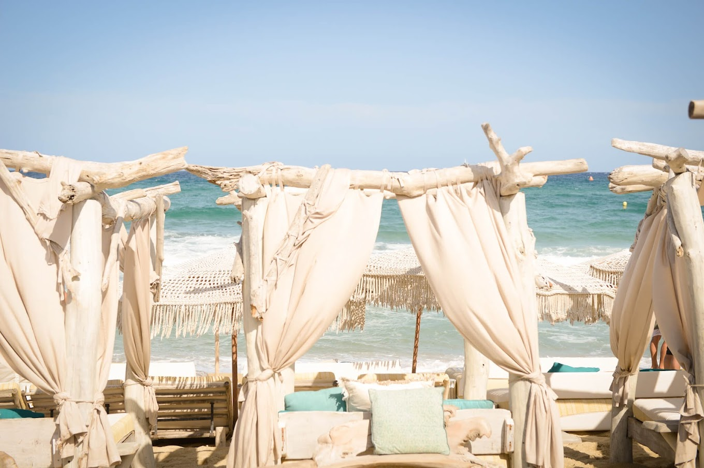
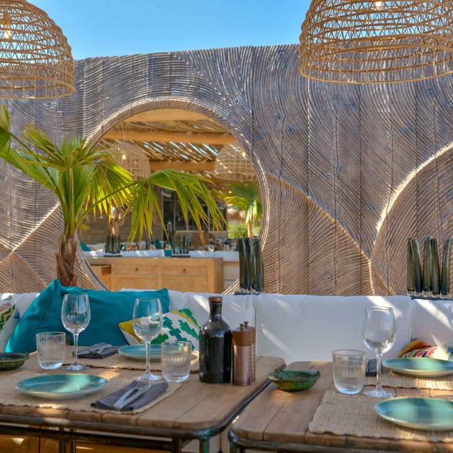

Verde Beach: Qui si puo' godere dell’atmosfera tipica di St. Tropez rilassante e piena di divertimento allo stesso tempo. E' possibile mangiare al ristorante prodotti freschi e di stagione, proprio vicino al mare, accompagnando il tutto da un sottofondo musicale.

Dopo un buon pranzo si approfitta per rilassarsi sui comodi lettini in stile boehemian con tessuti leggeri e svolazzanti che poggiano su una struttura lignea e musica lounge che pian piano aumenta per dare inizio all’ora dell’aperitivo.

Inoltre il luogo si presta benissimo per accogliere qualsiasi tipo di festa, gli esperti culinari di Verde Beach organizzeranno l’evento in stretta collaborazione con lo Chef Yannick Plassart.